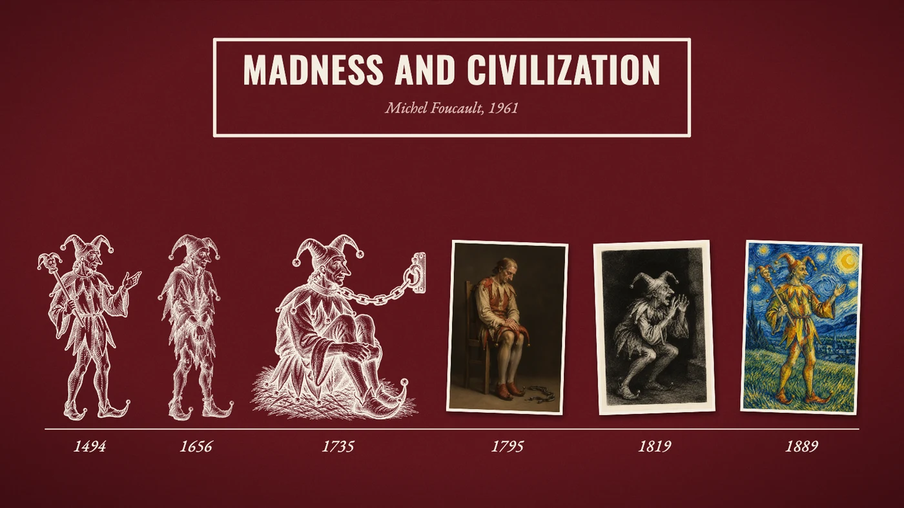

A short documentary on Michel Foucault’s 1961 book: how Europe sent its madmen down the rivers, then locked them up, then “freed” them — and what that says about reason.
Narration written from Michel Foucault, Madness and Civilization (1961; English translation by Richard Howard, 1965); quotations are his and those of Pascal and Dostoevsky as he cites them. Voices by ElevenLabs v4; music and pictures are public-domain or CC0 works from Wikimedia Commons, listed below. The line drawings of Foucault, the Fool in each era, the tea party and the props were made with an image model (gpt-image via OpenRouter), the chained Fool animated with Kling 3.0. Map data from Natural Earth (public domain). Type: Oswald and EB Garamond (SIL Open Font License, lib/fonts/).